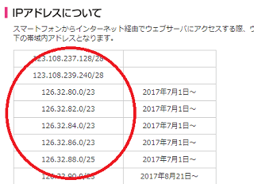

ログのIPアドレスから個人情報を特定できる？
掲示板などに名誉毀損の書き込みがあった際、サイトの管理者やサーバー会社などが保有しているアクセスログのIPアドレスから書き込んだ人を特定できる可能性があります。
例えば、投稿されたコメントのアクセスログが以下のように残っていたとします。
111.11.11.11 - - [15/Jan/2001:00:05:12 +0900]
この場合、IPアドレス「111.11.11.11」の訪問者が、日本時間（+0900）の2001年1月15日の0時5分12秒にアクセスしたことを意味していますが、このIPアドレスはJPNICなどの組織が管理して各プロバイダ会社に割り当てているものです。
例えば、ソフトバンクモバイル株式会社に割り当てられているIPアドレスはこのような範囲になっていますが、各プロバイダ会社に割り当てられている範囲は決まっています。

そのため、「JPNIC WHOIS Gateway - JPNIC」などで調べれば、このIPアドレスの情報を元に書き込んだ人が使用しているプロバイダ会社を確認することができます。
さらに、そのIPアドレスは回線プロバイダがそれぞれの契約者に割り当てているため、最終的には回線会社が保有している契約者の個人情報からその人物を特定することができます。
このプロバイダ会社については、「プロバイダ責任制限法」により責任が制限されているため、名誉毀損の損害賠償請求などはできませんが、発信者情報の開示請求をすることにより、書き込んだ個人を特定することができます。
けれども、一般の人がプロバイダ会社に、「2001年1月15日の0時5分12秒にIPアドレス111.11.11.11を割り当てた契約者の名前と住所、電話番号を教えてください。」と聞いても、そのような個人情報はまず教えてはくれません。
プロバイダ側には個人情報保護の責任もあるため、発信者情報の開示請求には簡単に応じませんので、捜査権限のある警察の介入でもない限り困難なケースが多い傾向にあります。
また、回線プロバイダ以前に、そもそもサーバー会社や掲示板サイトの管理者にもアクセスログを開示してもらう必要があるため、一般的には弁護士などに依頼して裁判で法的に介入してもらう必要があります。
回線プロバイダ会社やサーバー会社でログの保存期間がどのくらいに設定されているかは不明ですが、ログが廃棄された後では調べようがなくなるため、誹謗中傷を受けているなどの事情で調査を依頼する場合には早めに対応することをおすすめします。
上記のように、たとえIPアドレスだけが分かっても個人を特定するのは不可能なため、捜査権限のある公的機関でもない限り、アクセスログだけがあってもそれほど意味はないかと思います。